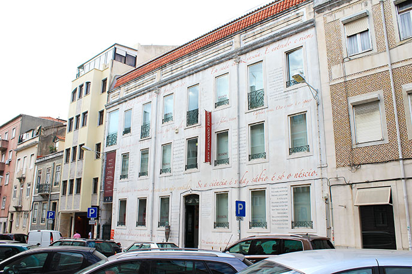
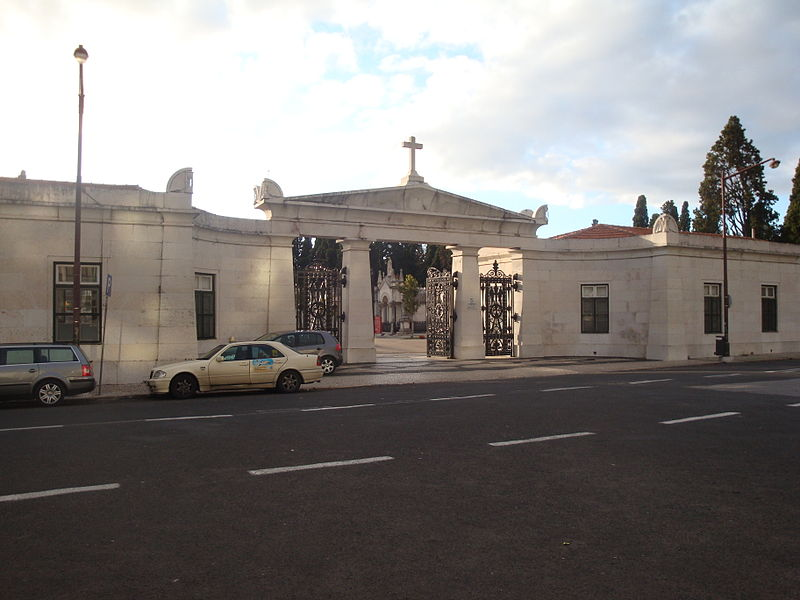

Sítios importantes da freguesia:
- Jardim da Parada,
- Mercado,
- Museu Casa Fernando Pessoa,
- Biblioteca Cinema Europa,
- Pátio dos Artistas,
- Cemitério dos Prazeres
- Jardim dos Prazeres.
Como chegar
Todos os caminhos levam a Campo de Ourique!- De metro, até a Estação Rato, de lá, mais 10 minutos a pé para chegares, pela Avenida Álvares Cabral e Rua Domingos Sequeira;
- De elétrico: 25 e 28;
- De autocarro: linhas 774 e 709;
- De carro, Latitude 38,7229 / Longitude -9,172.
Conheça a Freguesia

Jardim da Parada

Mercado do Campo de Ourique

Biblioteca Cinema Europa

Casa Fernando Pessoa

Cemitério dos Prazeres
| O que há de fixe em cada sítio? | ||
|---|---|---|
| NOME | ENDEREÇO | O QUE HÁ |
| Jardim da Parada | Entre as ruas Tomás Anunciação, Almeida de Sousa, 4 de Infantaria e 16 de Intantaria | Quiosque, parque infantil, lago, patos, feira aos fins de semana |
| Casa Fernando Pessoa | Rua Coelho da Rocha, nº 18 | Museu, lanchonete |
| Jardim dos Prazeres | Ponto final e inicial do Elétrico 28, na Praça São João Bosco, ao final da Rua Saraiva de Carvalho | Ponto para o elétrico, quiosque, parque infantil, parque canino, lava-cães |
| Cemitério dos Prazeres | Praça São João Bosco, ao final da Rua Saraiva de Carvalho | Capela, obras de arte dos séculos XIX e XX, belíssima vista para o Tejo e a Ponte 25 de Abril |